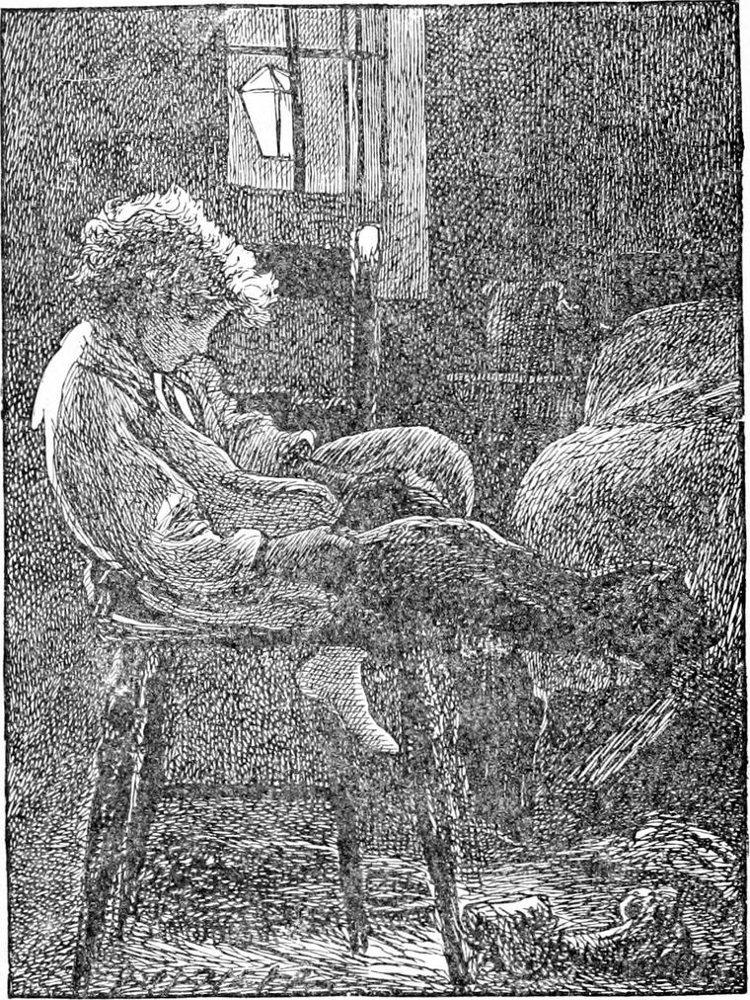
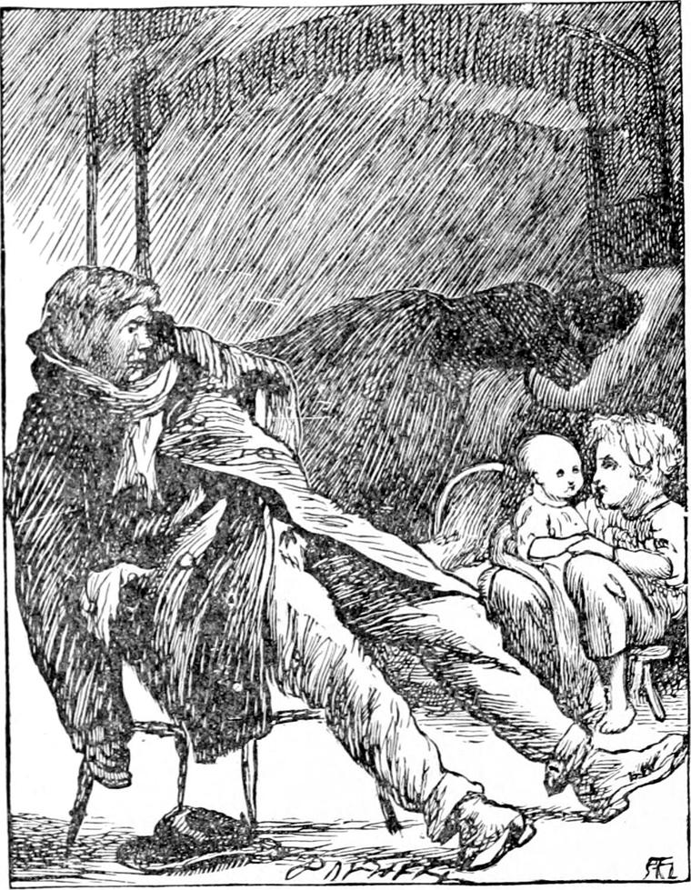

A FEW nights after this, Diamond woke up suddenly, believing he heard North Wind thundering along. But it was something quite different. South Wind was moaning round the chimneys, to be sure, for she was not very happy that night, but it was not her voice that had wakened Diamond. Her voice would only have lulled him the deeper asleep. It was a loud, angry voice, now growling like that of a beast, now raving like that of a madman; and when Diamond came a little wider awake, he knew that it was the voice of the drunken cabman, the wall of whose room was at the head of his bed. It was anything but pleasant to hear, but he could not help hearing it. At length there came a cry from the woman, and then a scream from the baby. Thereupon Diamond thought it time that somebody did something, and as himself was the only somebody at hand, he must go and see whether he could not do something. So he got up and put on part of his clothes, and went down the stair, for the cabman's room did not open upon their stair, and he had to go out into the yard, and in at the next door. This, fortunately, the cabman, being drunk, had left open. By the time he reached their stair, all was still except the voice of the crying baby, which guided him to the right door. He opened it softly, and peeped in. There, leaning back in a chair, with his arms hanging down by his sides, and his legs stretched out before him and supported on his heels, sat the drunken cabman. His wife lay in her clothes upon the bed, sobbing, and the baby was wailing in the cradle. It was very miserable altogether.

Now the way most people do when they see anything very miserable is to turn away from the sight, and try to forget it. But Diamond began as usual to try to destroy the misery. The little boy was just as much one of God's messengers as if he had been an angel with a flaming sword, going out to fight the devil. The devil he had to fight just then was Misery. And the way he fought him was the very best. Like a wise soldier, he attacked him first in his weakest point—that was the baby; for Misery can never get such a hold of a baby as of a grown person. Diamond was knowing in babies, and he knew he could do something to make the baby, happy; for although he had only known one baby as yet, and although not one baby is the same as another, yet they are so very much alike in some things, and he knew that one baby so thoroughly, that he had good reason to believe he could do something for any other. I have known people who would have begun to fight the devil in a very different and a very stupid way. They would have begun by scolding the idiotic cabman; and next they would make his wife angry by saying it must be her fault as well as his, and by leaving ill-bred though well-meant shabby little books for them to read, which they were sure to hate the sight of; while all the time they would not have put out a finger to touch the wailing baby. But Diamond had him out of the cradle in a moment, set him up on his knee, and told him to look at the light. Now all the light there was came only from a lamp in the yard, and it was a very dingy and yellow light, for the glass of the lamp was dirty, and the gas was bad; but the light that came from it was, notwithstanding, as certainly light as if it had come from the sun itself, and the baby knew that, and smiled to it; and although it was indeed a wretched room which that lamp lighted—so dreary, and dirty, and empty, and hopeless!—there in the middle of it sat Diamond on a stool, smiling to the baby, and the baby on his knees smiling to the lamp. The father of him sat staring at nothing, neither asleep nor awake, not quite lost in stupidity either, for through it all he was dimly angry with himself, he did not know why. It was that he had struck his wife. He had forgotten it, but was miserable about it, notwithstanding. And this misery was the voice of the great Love that had made him and his wife and the baby and Diamond, speaking in his heart, and telling him to be good. For that great Love speaks in the most wretched and dirty hearts; only the tone of its voice depends on the echoes of the place in which it sounds. On Mount Sinai, it was thunder; in the cabman's heart it was misery; in the soul of St. John it was perfect blessedness.
By and by he became aware that there was a voice of singing in the room. This, of course, was the voice of Diamond singing to the baby—song after song, every one as foolish as another to the cabman, for he was too tipsy to part one word from another: all the words mixed up in his ear in a gurgle without division or stop; for such was the way he spoke himself, when he was in this horrid condition. But the baby was more than content with Diamond's songs, and Diamond himself was so contented with what the songs were all about, that he did not care a bit about the songs themselves, if only baby liked them. But they did the cabman good as well as the baby and Diamond, for they put him to sleep, and the sleep was busy all the time it lasted, smoothing the wrinkles out of his temper.
At length Diamond grew tired of singing, and began to talk to the baby instead. And as soon as he stopped singing, the cabman began to wake up. His brain was a little clearer now, his temper a little smoother, and his heart not quite so dirty. He began to listen and he went on listening, and heard Diamond saying to the baby something like this, for he thought the cabman was asleep:
“Poor daddy! Baby's daddy takes too much beer and gin, and that makes him somebody else, and not his own self at all. Baby's daddy would never hit baby's mammy if he didn't take too much beer. He's very fond of baby's mammy, and works from morning to night to get her breakfast and dinner and supper, only at night he forgets, and pays the money away for beer. And they put nasty stuff in beer, I've heard my daddy say, that drives all the good out, and lets all the bad in. Daddy says when a man takes a drink, there's a thirsty devil creeps into his inside, because he knows he will always get enough there. And the devil is always crying out for more drink, and that makes the man thirsty, and so he drinks more and more, till he kills himself with it. And then the ugly devil creeps out of him, and crawls about on his belly, looking for some other cabman to get into, that he may drink, drink, drink. That's what my daddy says, baby. And he says, too, the only way to make the devil come out is to give him plenty of cold water and tea and coffee, and nothing at all that comes from the public-house; for the devil can't abide that kind of stuff, and creeps out pretty soon, for fear of being drowned in it. But your daddy will drink the nasty stuff, poor man! I wish he wouldn't, for it makes mammy cross with him, and no wonder! and then when mammy's cross, he's crosser, and there's nobody in the house to take care of them but baby; and you do take care of them, baby—don't you, baby? I know you do. Babies always take care of their fathers and mothers—don't they, baby? That's what they come for—isn't it, baby? And when daddy stops drinking beer and nasty gin with turpentine in it, father says, then mammy will be so happy, and look so pretty! and daddy will be so good to baby! and baby will be as happy as a swallow, which is the merriest fellow! And Diamond will be so happy too! And when Diamond's a man, he'll take baby out with him on the box, and teach him to drive a cab.”

He went on with chatter like this till baby was asleep, by which time he was tired, and father and mother were both wide awake—only rather confused—the one from the beer, the other from the blow—and staring, the one from his chair, the other from her bed, at Diamond. But he was quite unaware of their notice, for he sat half-asleep, with his eyes wide open, staring in his turn, though without knowing it, at the cabman, while the cabman could not withdraw his gaze from Diamond's white face and big eyes. For Diamond's face was always rather pale, and now it was paler than usual with sleeplessness, and the light of the street-lamp upon it. At length he found himself nodding, and he knew then it was time to put the baby down, lest he should let him fall. So he rose from the little three-legged stool, and laid the baby in the cradle, and covered him up—it was well it was a warm night, and he did not want much covering—and then he all but staggered out of the door, he was so tipsy himself with sleep.
“Wife,” said the cabman, turning towards the bed, “I do somehow believe that wur a angel just gone. Did you see him, wife? He warn't wery big, and he hadn't got none o' them wingses, you know. It wur one o' them baby-angels you sees on the gravestones, you know.”
“Nonsense, hubby!” said his wife; “but it's just as good. I might say better, for you can ketch hold of him when you like. That's little Diamond as everybody knows, and a duck o' diamonds he is! No woman could wish for a better child than he be.”
“I ha' heerd on him in the stable, but I never see the brat afore. Come, old girl, let bygones be bygones, and gie us a kiss, and we'll go to bed.”
The cabman kept his cab in another yard, although he had his room in this. He was often late in coming home, and was not one to take notice of children, especially when he was tipsy, which was oftener than not. Hence, if he had ever seen Diamond, he did not know him. But his wife knew him well enough, as did every one else who lived all day in the yard. She was a good-natured woman. It was she who had got the fire lighted and the tea ready for them when Diamond and his mother came home from Sandwich. And her husband was not an ill-natured man either, and when in the morning he recalled not only Diamond's visit, but how he himself had behaved to his wife, he was very vexed with himself, and gladdened his poor wife's heart by telling her how sorry he was. And for a whole week after, he did not go near the public-house, hard as it was to avoid it, seeing a certain rich brewer had built one, like a trap to catch souls and bodies in, at almost every corner he had to pass on his way home. Indeed, he was never quite so bad after that, though it was some time before he began really to reform.